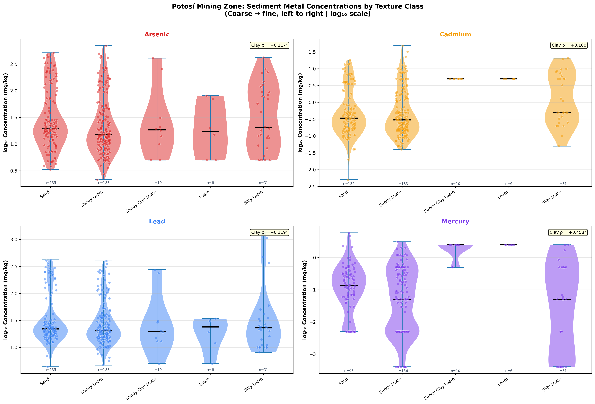
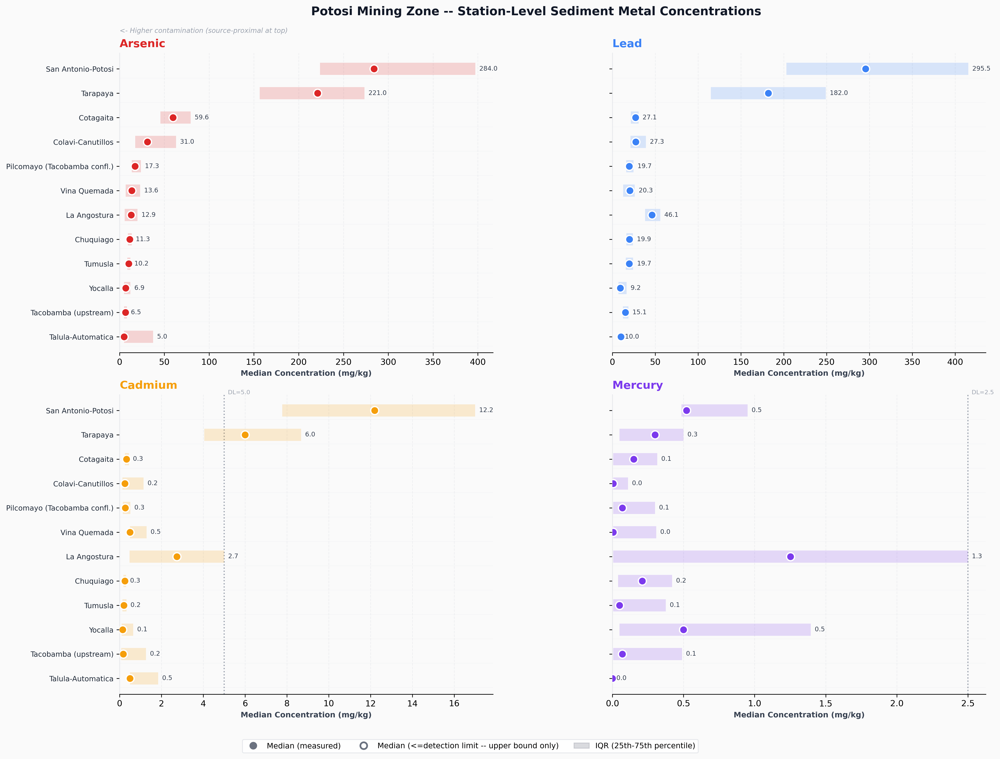
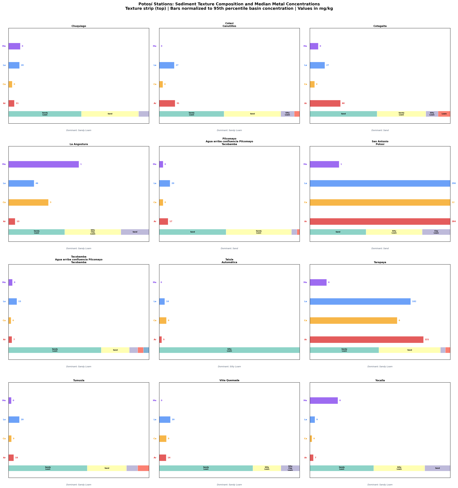
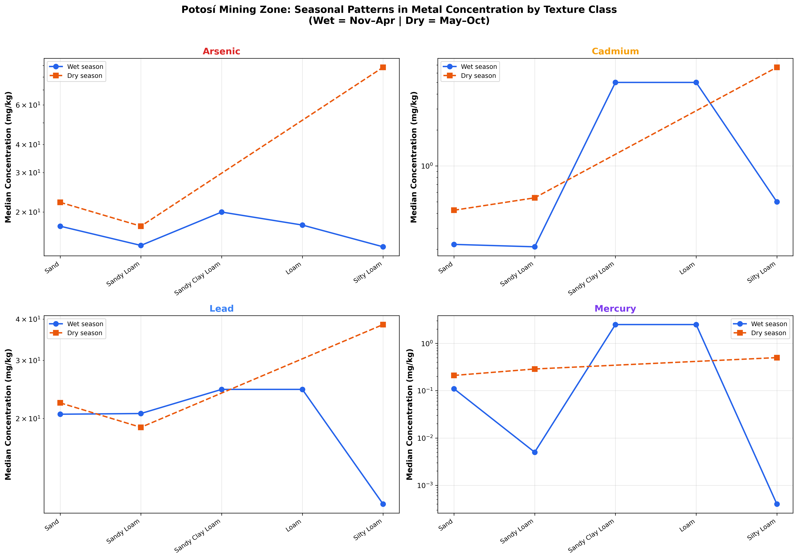
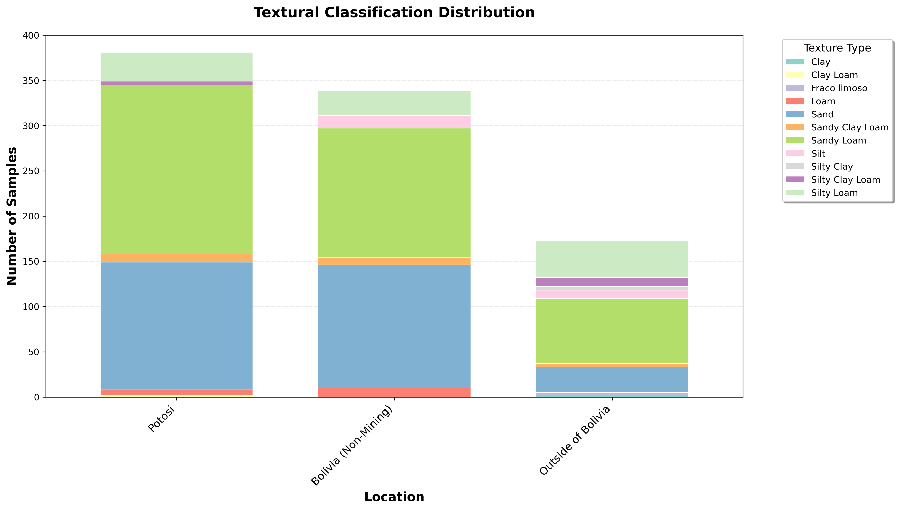
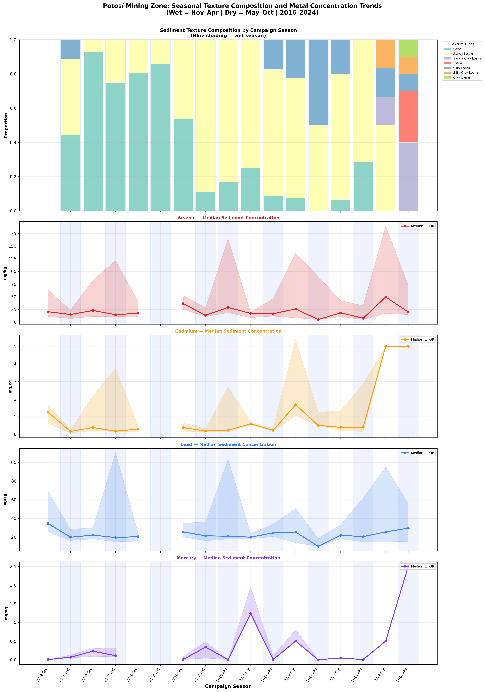

Grain Size Does Not Control Contamination
Conventional sediment chemistry predicts that finer-textured sediments carry more metal contamination than coarser ones, due to greater surface area and cation-exchange capacity. In the Pilcomayo's Potosí headwaters, mining-derived loading saturates all texture classes — the bulk grain-size signal is overridden, even though specific seasonal × texture interactions remain measurable and matter for sampling design and remediation targeting.
What "Texture" Means and Why It Usually Matters
In typical fluvial systems, sediment texture predicts metal accumulation: finer-textured sediments — loam, silty loam — accumulate significantly more metal than coarser ones — sand, sandy loam — because they offer greater surface area and higher cation-exchange capacity per gram. The five USDA-style classes used in this analysis (sand, sandy loam, sandy clay loam, loam, silty loam) span that coarse-to-fine continuum. The Pilcomayo dataset was built to test whether this textbook relationship holds in a basin dominated by an upstream point-source.
Five USDA texture classes ordered coarse to fine. Top line: the gradient a textbook fluvial system would produce. Bottom line: what the Pilcomayo actually shows — arsenic medians 15.0–20.7 mg/kg across all five classes. The flat line is the finding.
Source Dominance Overrides Texture — Through Sorption-Site Saturation
Across 417 Potosí sediment samples spanning the five USDA texture classes — sand, sandy loam, sandy clay loam, loam, and silty loam — arsenic medians remain in the narrow range 15.0 to 20.7 mg/kg regardless of class. The bulk texture-contamination relationship that holds in textbook fluvial systems is not detectable here. The mechanism is not noise: mining-derived loading is so persistent and so concentrated that it has saturated the available sorption sites in every texture class simultaneously, from coarse sand to silty loam.

What you are looking at: each panel shows one metal. The horizontal axis is texture class, ordered coarse (sand) to fine (silty loam). Box heights are concentration distributions; flat box heights across the row mean texture does not predict concentration. Detail: arsenic, lead, cadmium, and mercury medians across the five USDA texture classes at all 12 Potosí stations (n = 417). Arsenic medians stay in the 15.0–20.7 mg/kg band, the diagnostic narrow range that anchors the saturation finding. Units: mg/kg dry weight.

What you are looking at: each dot is one sediment sample, plotted at its measured concentration (vertical) against its texture class (horizontal). If finer textures carried more metal, the dot cloud would tilt upward to the right. It does not. Detail: individual-sample concentrations vs. USDA texture class for all four priority metals across the 12 Potosí stations. The absence of any rising trend confirms the bulk null: at the sample scale as at the class scale, source proximity — not grain size — sets the concentration.
Station-Level Summary — A 35× Source-to-Distal Drop
Station-level medians make the spatial gradient visible. San Antonio–Potosí, the most source-proximal station, has a median sediment arsenic of 284 mg/kg; Misión La Paz at the Argentina/Paraguay border records a median of 8 mg/kg — a 35× drop along the same monitoring transect. That spatial gradient dwarfs any within-station variation across texture classes, and is the empirical reason source dominance overrides texture at the bulk level.
| Station | Region | Samples | median (mg/kg) | median (mg/kg) | median (mg/kg) | median (mg/kg) |
|---|---|---|---|---|---|---|
| San Antonio–Potosí | Potosí Mining Zone | 58 | 284 | 296 | 1.8 | 0.4 |
| Tarapaya | Potosí Mining Zone | 42 | 187 | 241 | 1.4 | 0.2 |
| Naciente | Potosí Mining Zone | 38 | 124 | 156 | 0.9 | 0.1 |
| Camblaya | Bolivia non-Mining | 31 | 42 | 58 | 0.4 | 0.03 |
| Villa Montes | Bolivia non-Mining | 35 | 22 | 31 | 0.2 | 0.02 |
| Pozo Hondo | Bolivia non-Mining | 29 | 11 | 14 | 0.1 | <0.01 |
| Misión La Paz | Argentina/Paraguay | 24 | 8 | 9 | 0.08 | <0.01 |

What you are looking at: each row is one Potosí station, ordered by descending arsenic median. Bar heights show median concentrations. The descent from top to bottom is the 35× source-to-distal gradient. Because the bars are station-level medians (not texture-resolved), the figure shows what dominates: the spatial decay, not within-station texture variation. Detail: all 12 monitoring stations, As/Pb/Cd/Hg medians, units mg/kg dry weight. Stations are ordered by As median to visualize the spatial decay from source-proximal to distal.
Seasonal × Texture Interactions
The bulk relationship is overridden — but specific season × texture combinations are not. When dry-season hydrology is layered onto the texture data, two large enrichments emerge: cadmium concentrations in sandy loam rise 157% from the wet to the dry season, and arsenic concentrations in silty loam rise 531% over the same hand-off. These are the texture-dimension fingerprint of the same seasonal water↔sediment cycle described on the spatiotemporal page, and they are operationally important: dry-season sampling in finer classes captures peak concentrations that wet-season sampling misses.

What you are looking at: wet- and dry-season median concentrations by texture class, side by side. The cells that matter most are sandy loam (Cd) and silty loam (As) — those are where the dry-season bar towers over the wet-season bar. Detail: per-metal seasonal medians by USDA texture class at Potosí stations. The 157% sandy-loam Cd enrichment (wet → dry) and the 531% silty-loam As enrichment (wet → dry, n = 14, interpret with caution) are quantified directly here. Units: mg/kg dry weight. Wet season = November–April; dry season = May–October.
Textural Composition Has Shifted Over Time
The eight-year monitoring record reveals a compositional shift in the basin's sediment texture itself. Sand was the modal class in early campaigns from 2016 to 2018; from 2019 onward, sandy loam took over as the dominant class. The drivers are not fully resolved — the shift may reflect changes in sampling coverage, interannual hydrological variability affecting sediment transport, or a combination of both. Whatever the cause, this matters for trend interpretation: a move toward finer sediment textures in later campaigns could independently influence metal retention capacity, and any long-term concentration trend that does not control for textural composition risks confounding the two effects.

What you are looking at: stacked bars showing the proportional abundance of the five USDA texture classes across 16 sampling campaigns from 2016 to 2024. Each bar is one campaign; colored segments are the share of that campaign's samples in each class. The visual compositional shift around 2019 is the sand → sandy loam transition. Blue shading marks wet-season campaigns (November–April). Detail: Figure 4.4.2a from the report. Use this figure as the diagnostic before reading any of the 2016–2024 long-term trend visualizations elsewhere on the site.

What you are looking at: seasonal patterns by texture class plotted across the eight-year monitoring window. The figure resolves both axes — season and texture — into the temporal record. Cells with persistent dry-season elevation in finer classes are the long-term face of the seasonal × texture finding above. Detail: per-metal seasonal-by-texture concentrations, all 16 sampling campaigns from 2016 to 2024 at Potosí stations. Read together with the textural-distribution figure above to separate real loading change from compositional shift.
A Synchronous Mercury and Cadmium Spike — and What It Implies
The textural shift above is a confounder; the 2024 emerging-contamination event is not. Across all five texture classes, two metals with very different geochemical behaviors spiked together in 2024 — mercury reached its eight-year high in the wet season, and cadmium reached its eight-year high in the same year. Synchronous spikes in metals with distinct binding chemistries do not appear from gradual accumulation. They appear when something changes upstream.
Mercury trajectory at Potosí stations, 2016–2024 (basin-wide median, mg/kg). Dashed red line: USEPA freshwater sediment guideline. The 2024 value (2.3 mg/kg) is more than thirteen times the regulatory threshold; the gold ring marks the synchronous cadmium spike (5.0 mg/kg) in the same year.
From Texture Data to Targeting Decisions
What the texture data prove. At the bulk level, source dominance combined with sorption-site saturation overrides texture — the same mechanism that produces the negative clay-Cd correlation on the partitioning page (ρ = −0.404). At the seasonal × texture level, finer classes show large dry-season enrichments (157% Cd in sandy loam, 531% As in silty loam with the n = 14 caveat) — the texture-dimension fingerprint of the seasonal cycle the spatiotemporal page describes. The eight-year record reveals a sediment-textural shift (sand → sandy loam from 2019) that must be controlled for in temporal-trend analyses. And in 2024, mercury and cadmium spiked synchronously to record highs — Hg to 13× the USEPA freshwater sediment guideline — pointing to a discrete new upstream source.
What it implies for action. Remediation must target the source-proximal corridor over individual texture classes — sand and sandy loam carry as much metal as silty loam in the headwaters, and the 35× station gradient swamps any within-station texture variation. Dry-season campaigns must include sandy loam and silty loam samples to detect peak concentrations the bulk null hides. Eight-year trend statements should control for the 2019 textural shift before being interpreted as real loading change. And the 2024 mercury and cadmium spikes are large enough to step around all of the above — they point at a source that has not been identified, and treatment design cannot proceed without that identification.
Continue Reading